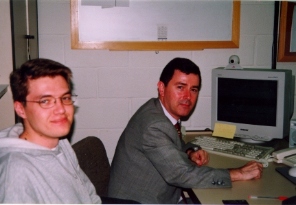

Fco. Javier Ceballos Sierra
Nació en Santander y reside en Alcalá de Henares.
Madrid.

El profesor Ceballos resolviendo dudas a sus
alumnos
Es:
- Profesor-Investigador de la Universidad de Alcalá y
- Escritor
Ha publicado varios libros en la editorial RA-MA, sobre
lenguajes para desarrollo de aplicaciones. Entre ellos,
destacan:
Curso de programación con PASCAL
Curso de programación QBASIC y MS-DOS
Curso de programación Microsoft COBOL
Curso de programación RM/COBOL-85
Enciclopedia del lenguaje C
El abecé de MS-DOS 6
Curso de programación C/C++
Programación orientada a objetos con C++
Microsoft Visual C++. Aplicaciones para Windows
Visual Basic. Curso de programación
Enciclopedia de Microsoft Visual Basic